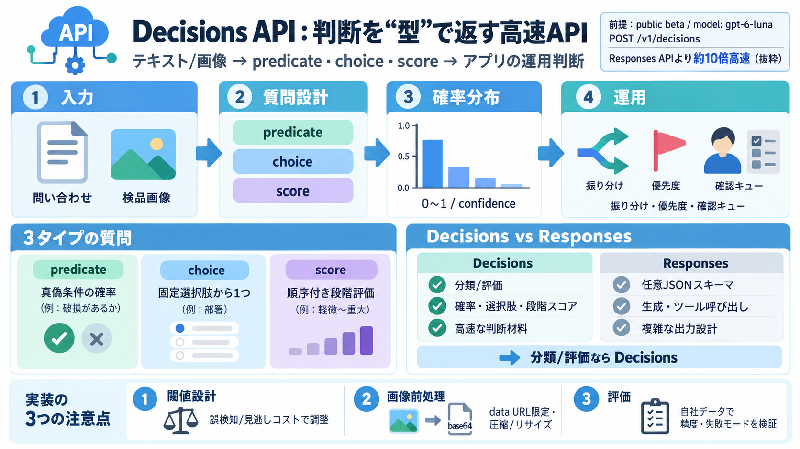

GPT-6 Luna
Compare Models OpenAI Vals GPT-6 Luna Release Date: Sep 22, 2026 Developer OpenAI 🇺🇸 Context Window 1M Max Ou…

Compare Models OpenAI Vals GPT-6 Luna Release Date: Sep 22, 2026 Developer OpenAI 🇺🇸 Context Window 1M Max Ou…
Sources: OpenAI API pricing page and model pages, September 22, 2026. Fast mode costs 2x, Batch and Flex 50%, regional d…
Requesty Back|SEP '26AI MODELS / MODEL COMPARISONS 10 MIN READ| # GPT-6 Sol and Luna: release date, pricing and what …
At standard rates GPT-6.1 Sol costs $2 per million input tokens, $0.10 per million cached input tokens, $2.50 per millio…
Artificial Analysis All Releases• • Proprietaryrelease • Released September 2026 # GPT-6 Luna: Release Intelligence…